Editorial + Minimal · AI image style prompt
Salvage Body Editorial
Speculative industrial fashion editorials: altered human silhouettes fused with oversized worn mechanical body interfaces, painterly abrasion, black clothing and signal-orange hardware isolated on white.
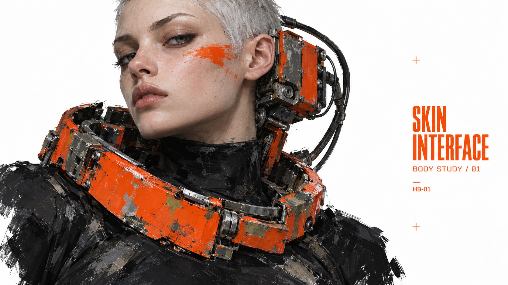
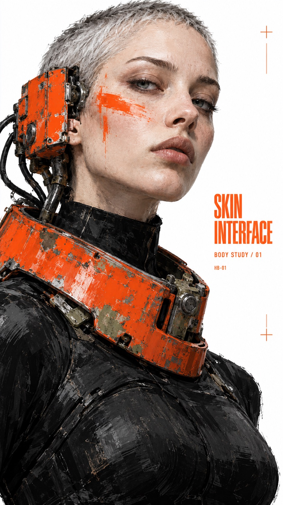
4 example cases
Same style.json, different subjects. Each case's values are in the examples section of the JSON.
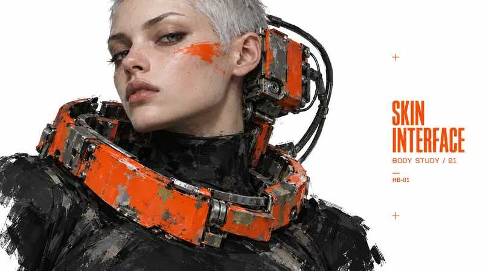
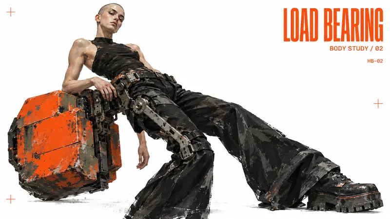
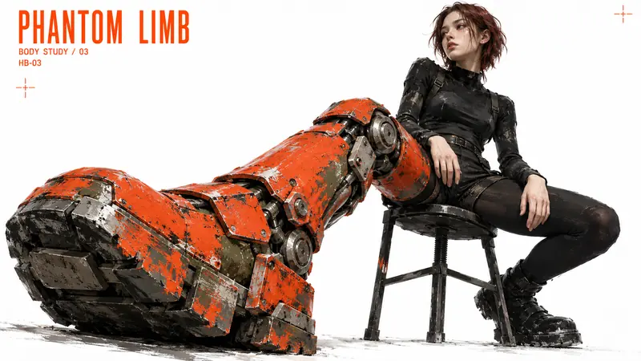
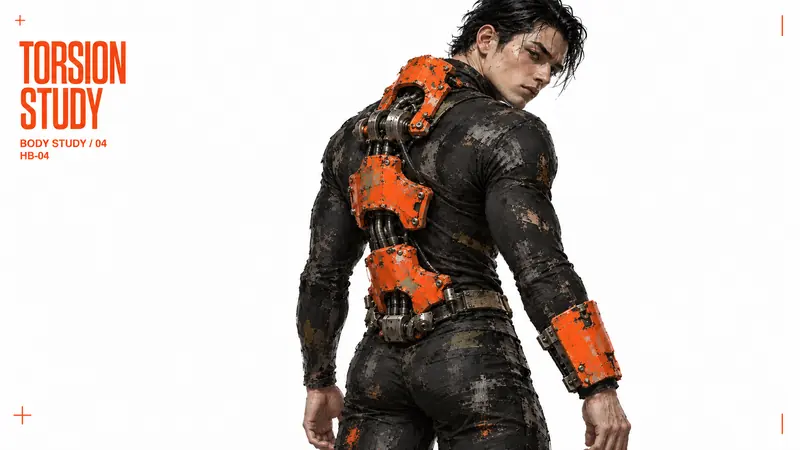
What this style does
Speculative industrial fashion editorials: altered human silhouettes, oversized worn mechanical body interfaces, painterly abrasion, black clothing and signal-orange hardware isolated on white.
Signature traits
- A clean white field isolates a dominant fashion figure fused with weighty mechanical hardware; the altered body silhouette is the focal subject, with purposeful white margins.
- Signal vermilion-orange paint and typography oppose charcoal-black masses and exposed gray metal; muted olive or faded blue may occur only as small material traces.
- Render tactile painted realism, with broad scraped paint, dry-brush planes and selectively unfinished edges on the figure and machinery. Preserve face and anatomy, but avoid uniform photographic microdetail. White paper and typography stay clean.
- Orange condensed grotesk headlines and tiny utilitarian labels form a compact editorial hierarchy subordinate to the figure; technical rather than motivational advertising. Use sparse registration marks.
- Explore close portraits, full-body counterbalanced poses, seated foreshortening or twisted three-quarter figures; hair, age, anatomy and mechanical attachment location may vary.
- Headlines may rotate, stack or run horizontally according to the subject and aspect ratio; avoid a fixed right-side title template.
style.json
{
"schema_version": "2.2",
"style_version": "1.0.0",
"style_name": "Salvage Body Editorial",
"style_slug": "salvage-body-editorial",
"style_summary": "Speculative industrial fashion editorials: altered human silhouettes, oversized worn mechanical body interfaces, painterly abrasion, black clothing and signal-orange hardware isolated on white.",
"environment_variables": {
"ASPECT_RATIO": "9:16 or 16:9",
"STYLE_FIDELITY_ANCHORS": "Prioritized style rules injected at runtime",
"SOURCE_CONTENT_TO_AVOID": "Original reference content excluded at runtime",
"SUBJECT": "New focal subject and material relationship",
"DESIGN_DIRECTION": "Concept and ratio-specific composition intent",
"MAIN_TEXT": "Exact headline",
"SECONDARY_TEXT": "Exact supporting line",
"CATALOG_CODE": "Exact small identifier"
},
"style_fidelity_anchors": [
"[CORE] A clean white field isolates a dominant fashion figure fused with weighty mechanical hardware; the altered body silhouette is the focal subject, with purposeful white margins.",
"[CORE] Signal vermilion-orange paint and typography oppose charcoal-black masses and exposed gray metal; muted olive or faded blue may occur only as small material traces.",
"[CORE] Render tactile painted realism, with broad scraped paint, dry-brush planes and selectively unfinished edges on the figure and machinery. Preserve face and anatomy, but avoid uniform photographic microdetail. White paper and typography stay clean.",
"[CORE] Orange condensed grotesk headlines and tiny utilitarian labels form a compact editorial hierarchy subordinate to the figure; technical rather than motivational advertising. Use sparse registration marks.",
"[FLEX] Explore close portraits, full-body counterbalanced poses, seated foreshortening or twisted three-quarter figures; hair, age, anatomy and mechanical attachment location may vary.",
"[FLEX] Headlines may rotate, stack or run horizontally according to the subject and aspect ratio; avoid a fixed right-side title template.",
"[FLEX] Develop a cold, confrontational human-machine fashion attitude through asymmetric scale, body modification and physical tension. Machinery should affect the body silhouette, not illustrate ecology, kindness or a practical profession."
],
"source_content_to_avoid": [
"The black-bob woman and her exact identity or pose",
"The red apple held against the mouth",
"Oversized paired shoulder armor and the white painted numeral 2",
"The reference wording, RX-302.19 code, and fingerprint-like identity emblem"
],
"visual_deconstruction": {
"hierarchy": "Large tactile silhouette first, orange headline second, restrained labels third.",
"source_observations": "Portrait shows close figure crop, asymmetric heavy shoulders, vertical right text and tiny margin symbols. These exact positions are not invariants.",
"mood": "Cold speculative fashion, scarred cybernetic anatomy, ambiguous industrial body modification; more art-direction than narrative illustration."
},
"composition": {
"general": "A fashion image occupies most of the canvas; type remains an editorial margin or compact counterweight. Sculptural posture, hardware mass and clean empty space determine the hierarchy.",
"portrait": "Use a tall body crop or close portrait according to case, with compact side typography and generous white outer margin.",
"landscape": "Recompose using lateral action, open white voids or a different view; never stretch or crop a portrait mechanically."
},
"typography": {
"headline": "Compact orange condensed bold grotesk, exact spelling, subordinate to the figure. No giant motivational billboard headline.",
"labels": "Small orange utilitarian sans serif, legible and sparse.",
"orientation": "May rotate 90 degrees as a complete readable line; no letter-by-letter vertical stacking."
},
"color_palette": {
"paper": "#FFFFFF",
"signal": "#F04416",
"dark": "#171B18",
"metal": "#8A8B7D",
"secondary": "Small scraped traces of dull olive, dirty pale gray and faded blue in the painted subject, never an overall color cast."
},
"image_treatment": "Expressive painted realism: angular opaque brush planes, coarse dragged highlights, scraped enamel and partly broken silhouette edges, with convincing facial structure and mechanical weight. Large abrasion marks belong to orange metal and black textile, no all-over grunge or photographic pore-level sharpness. Off-white exposed metal and muted olive paint underlayers. Flat white background and perfectly solid orange typography remain pristine. Sculptural soft studio light; no shiny toy CGI.",
"design_rules": [
"Show hardware integrated into the body silhouette with visible supports or attachment points; the person remains a fashion subject rather than a worker doing a job.",
"Keep one dominant focal constellation; use at most a few tiny cross or alignment marks.",
"Print only the three supplied text strings, once each, without added punctuation or invented logos.",
"Keep all text safely within the canvas and unoccluded by machinery.",
"Ratio-specific composition may change pose and viewing angle while preserving the theme."
],
"do": [
"Keep altered bodies and wearable machinery as the thematic center.",
"Create cold fashion attitudes and asymmetric silhouettes with physically readable attachment points.",
"Use broad painterly material marks and clean editorial margins."
],
"avoid": [
"Copying the original armored-woman silhouette.",
"Busy cyberpunk cityscapes or glowing neon interfaces.",
"Uniform grunge overlays on paper and text.",
"Generic glossy 3D toys, branded insignia or random extra copy.",
"Environmental regeneration, flora, fauna or sentimental care metaphors.",
"Job illustrations, sports advertising and motivational headline treatment."
],
"prompt_template": "Create one finished {ASPECT_RATIO} experimental fashion editorial poster, edge-to-edge canvas, no mockup. A cold human-machine body study on pure white. Prioritized style rules: {STYLE_FIDELITY_ANCHORS}\nSubject: {SUBJECT}\nDesign and ratio adaptation: {DESIGN_DIRECTION}\nExact compact headline: \"{MAIN_TEXT}\". Exact small supporting line: \"{SECONDARY_TEXT}\". Exact small identifier: \"{CATALOG_CODE}\". Print each once, no other lettering, numerals or brands. Typography is perfectly solid orange, clean and smaller than the dominant figure: a technical editorial margin, NOT a giant advertising headline. It may rotate 90 degrees as a readable complete line. Keep all letters unoccluded and inside the canvas with visible white separation from the figure. At most a few tiny orange registration marks.\nRendering: painterly realism and editorial collage, NOT a pristine photo. Use broad scraped enamel marks, large angular brush planes in clothing, selectively unfinished figure edges and strong black masses. Orange hardware has gray metal and muted olive paint beneath chips; face and anatomy convincing with painterly simplification. White paper has no texture. Sculptural light, no scene or horizon.\nReplace source content: {SOURCE_CONTENT_TO_AVOID}. No ecology metaphors, flowers, animals, gardening, apples, copied shoulder armor, action combat, weapons, city backgrounds, neon, CGI gloss, corporate ads, motivational slogans, logos or watermarks.",
"negative_prompt": "Source character or apple, copied shoulder armor, white numeral 2, fingerprint logo, branding, watermarks, city backgrounds, neon glow, smooth toy CGI, distressed white background, illegible or duplicate text, extra punctuation, anatomically implausible limbs. Ecology, plants, animals, gentle-care stories, occupational illustration, giant advertising type, photographic microdetail, weapons, combat.",
"examples": [
{
"case_name": "skin-interface",
"values": {
"SUBJECT": "Adult female fashion model with a very short silver buzzcut and an unreadable direct gaze, wearing a matte black high-neck bodysuit. An asymmetrical battered vermilion industrial neck ring sits around her collarbone; one side extends into a bulky rectangular ear receiver attached by dark cables behind the head. Most of the face and both eyes remain exposed. A thin orange graphic makeup streak crosses one cheek, clearly paint. No shoulder armor.",
"DESIGN_DIRECTION": "An intimate face-versus-hardware study. Portrait: tight head-to-waist crop, face off-center, massive collar flaring into lower left, small vertical headline on the right white margin. Landscape: head and collar on left two-thirds with the model turning slightly toward viewer, open white field and compact two-line title at right. Cold gaze and asymmetric ear receiver anchor both.",
"MAIN_TEXT": "SKIN INTERFACE",
"SECONDARY_TEXT": "BODY STUDY / 01",
"CATALOG_CODE": "HB-01"
}
},
{
"case_name": "load-bearing",
"values": {
"SUBJECT": "Tall lean adult androgynous model with a shaved head, black sleeveless stretch top, extremely long flared black trousers and heavy boots. A huge block-shaped salvaged vermilion counterweight is mounted off one hip by a visible black pelvic exoskeleton. One long gray structural strut runs to the outer thigh, making an asymmetrical industrial fashion silhouette. The model rests one hand on the waist frame and leans away from its mass, cool and self-possessed.",
"DESIGN_DIRECTION": "Fashion posture is caused by an off-center mass. Portrait: almost full-length frontal three-quarter view with a long diagonal lean, hips shifting one way and upper body the other, compact title following a white side margin. Landscape: elongated sloping body across center, offset hip block low on one side and compact title in the upper opposite corner. Keep the face and one bare arm readable; no carrying, gardening or occupational action.",
"MAIN_TEXT": "LOAD BEARING",
"SECONDARY_TEXT": "BODY STUDY / 02",
"CATALOG_CODE": "HB-02"
}
},
{
"case_name": "phantom-limb",
"values": {
"SUBJECT": "Adult female model with short dark auburn hair, black fitted long-sleeve top and black shorts over opaque leggings, sitting on a minimal black industrial stool. One leg is a giant worn vermilion prosthetic shin and boot with an exposed hinge knee and square layered plates. The other leg is slimmer and dark, folded back. The oversized mechanical boot projects toward the viewer; her ordinary hands rest on the thighs and she looks calmly across the frame. No injury, no exposed flesh at the prosthetic connection.",
"DESIGN_DIRECTION": "Explore foreshortening and the unsettling scale of an altered limb. Portrait: low camera close to the immense prosthetic boot in the lower foreground, seated torso and head receding above it, compact title in a clear upper side margin. Landscape: seated body toward right, long prosthetic leg thrust diagonally toward lower left; narrow headline along upper left white band. Preserve enough white around the limb to read its shape.",
"MAIN_TEXT": "PHANTOM LIMB",
"SECONDARY_TEXT": "BODY STUDY / 03",
"CATALOG_CODE": "HB-03"
}
},
{
"case_name": "torsion-study",
"values": {
"SUBJECT": "Adult male fashion model with slick dark hair, a fitted matte black full-body garment and a segmented scarred vermilion external spine apparatus worn over his back. Three thick mechanical vertebra housings and dark flexible cable joints follow the actual spinal midline and end above the sacrum. One forearm carries a rectangular orange industrial cuff, hands human and exposed. He stands naturally in rear three-quarter view, with ribcage and pelvis facing the same direction, both legs descending normally from their respective hip sockets. Only his head and upper shoulders turn gently toward the viewer. No lumbar corkscrew, backward pelvis or high raised knee; no acrobatics, battle or weapon.",
"DESIGN_DIRECTION": "Refinement of the selected black-and-orange fashion image: preserve character appearance, mechanical spine, cuff, painterly finish and typography. Correct the skeleton before adapting the silhouette. Portrait: upright rear three-quarter pose, head through thighs visible, natural small weight shift, both thighs descending beneath the pelvis; head looks back over the near shoulder, left vertical title stays. Landscape: rear three-quarter standing figure occupies middle and right with a slight whole-body diagonal lean, continuous aligned ribcage-waist-pelvis, hips and upper thighs visible below the back; compact title remains in the clear left field. Shoulder and pelvic axes are approximately parallel; modest neck rotation, normal torso length, two arms and two legs with plausible joint connections. No folded thigh projecting sideways from the waist and no oversized buttock mass.",
"MAIN_TEXT": "TORSION STUDY",
"SECONDARY_TEXT": "BODY STUDY / 04",
"CATALOG_CODE": "HB-04"
}
}
],
"category": "Editorial + Minimal"
}
Similar styles
 Signal Red Petal Profile Editorial Cover
Signal Red Petal Profile Editorial Cover
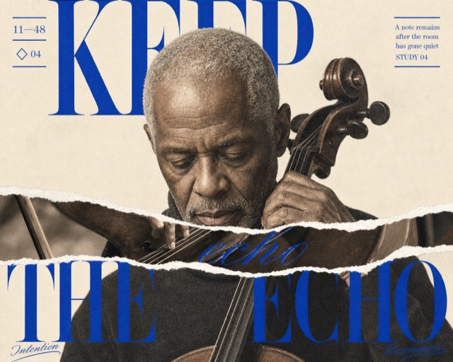
Cobalt Torn Didone Portrait Editorial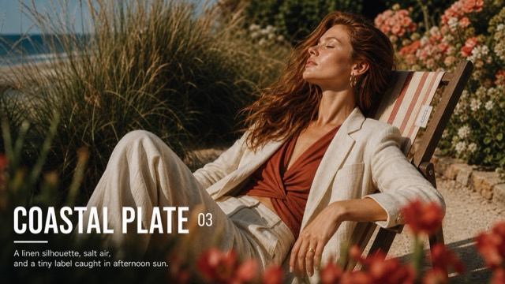
Sunlit Supermodel Nameplate Editorial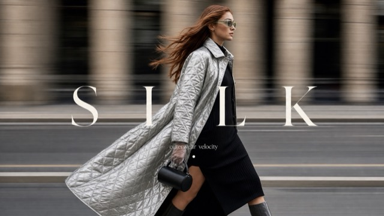
Kinetic Luxury Street Fashion Cover Style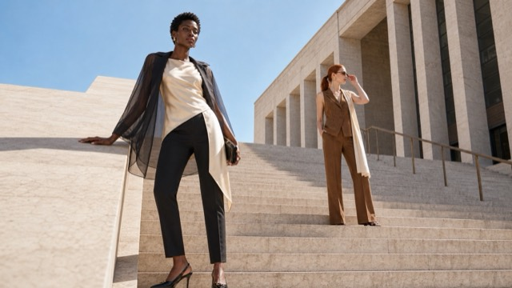
Sunlit Architectural Fashion Editorial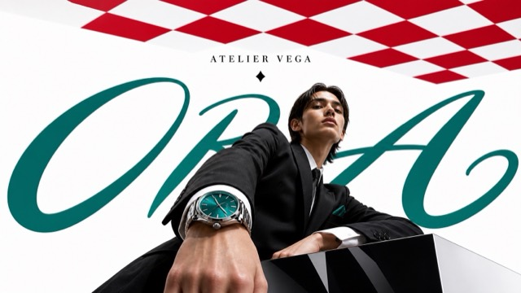
Luxury Perspective Checkerboard Editorial